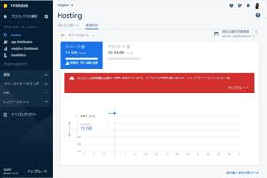
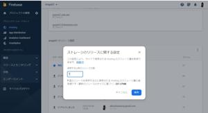

うるがいの話 ある日
最新: Firebase容量オーバーでデプロイできない【うるがいの話 ある日】とは 一日だけのプログです
『うるがいの話』の最新一日だけのプログで、通信料が少なく経済的だ。カニの画像をクリックすると全ての日付が載る『うるがいの話』サイトを表示します
|
|
【うるがいの話】 うるがい(ｳﾙｶﾞｲ urugai)とは、『もずくがに』の名前でとても大きくなります。 |
|---|---|
|
|
【カミマヤーの話】 猫のことを方言でマヤーといいます。カミマヤー（kamimayaa）とは、神の猫のことです。 |
|
【たながぁの音楽】 たながぁ（ﾀﾅｶﾞｰ tanagaa）とは手長えびのことで、何種類かあり大きいのは車 エビぐらいになります。 |

|
【ぶながぁの話】 ぶながぁ(ﾌﾞﾅｶﾞｰ bunagaa)とは、赤い髪の毛、赤い身体、そして身長は１ｍ２０ｃｍ ぐらい、川の蟹を食べているの目撃された。場所は沖縄県国頭郡大宜味村のと ある村僕の隣近所に住んでいる爺さんから、聞いた話です。 |
|
|
【ギーマの話】 ギーマ(giima)とは、山原の里山に咲くスズランに似た、 花を付けます。実は食べられます、 気が付くと口の周りが紫になっています。 |
2023年05月08日 (月）Firebase容量オーバーでデプロイできない
15:56
きのうの夜９時半過ぎ、フと履歴を消す方法が分かる。履歴を７に設定すると
一分後には保持前のデプロイ（プログの配置）が自動削除済へ変わっていた。
 
使用容量が制限２０ＧＢを示していたが、０ＧＢ（実際は０．３ＧＢ）になっ
た。昨日の日付分のデプロイを行うと、正常に終わる。事は遡のぼる５月５日
PS E:\Urugai27> firebase deploy
=== Deploying to 'urugai27'...
i deploying hosting
Error: HTTP Error: 429, You have exceeded the Hosting storage quota
for your Firebase project, so you cannot deploy to your site right
now. Visit the Firebase console to either manage your Hosting
storage or upgrade to the Blaze plan.
『ギーマの話』のプログをアップしたところ上のメッセージが出てアップでき
ず。とりあえず、Ｆｉｒｅｂａｓｅ容量オーバーが原因とまで調べる。きのう
は、朝からいろいろ対応策を試して疲れた。日々０．１ＧＢ未満のデータの履
歴が、２０２１年９月２９日から積みあがったのが原因だった。ところで他の
サイトは大丈夫だろうか、確認した。
『うるがいの話』 制限２ＧＢ 、使用０．８３ＧＢ nifty
『カミマヤーの話』 制限なし 、おお！ bibucket
『たながぁの音楽』 制限なし 、おお！ bibucket
『ぶながぁの話』 制限１ＧＢ 、使用０．０２ＧＢ FC2
『ギーマの話』 制限２０ＧＢ、使用０．０９ＧＢ firebase
『うるがいの話 ある日』 制限なし 、おお！ Github
実質、増えていくのは日々のプログを展開している『うるがいの話』だけであ
る。おっと、ChatGPTに尋ねてみよう。
firebaseのホスティングサービスのストレージクォータを超えた場合、無料
プランではストレージを減らすことはできません。ただし、いくつかの方法を
試して容量を節約することはできます。以下にいくつかのアプローチを示しま
す。
１．不要なファイルの削除：ホスティングされているプロジェクトのファイル
を見直し、不要なファイルや使用していないファイルを削除することでストレ
ージを節約できます。
２．３．４．・・・・、回答が参考にならので割愛
いまのところ、ChatGPTの回答はこんなものです。これでは、うーん。ついで
に、昨日から利用できるMicrosoftのBingChatにも尋ねてみた。
不要なファイルの削除
画像の圧縮
ファイルのキャッシュの設定
では、模範解答をば、これがあれば具体的な手順はネットで検索で分かる。
『ストレージのリリースに関する設定で、デプロイ履歴を減らす』
１５時４２分 ビットコインの総資産 ￥１１、０７６（↓２６７）